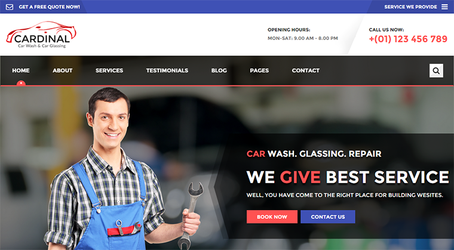
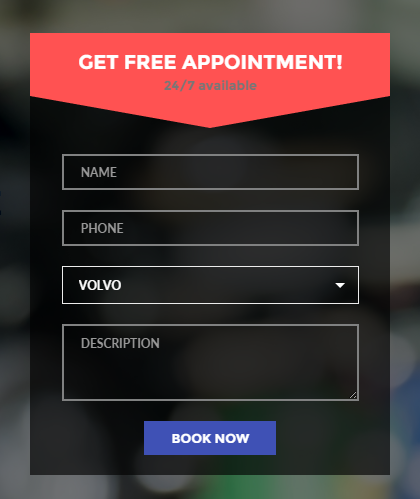
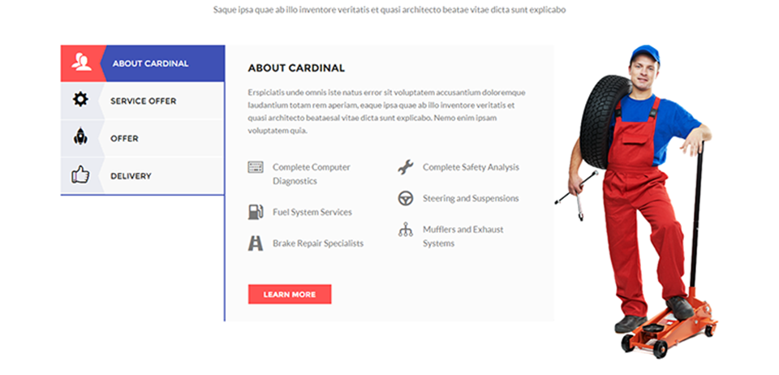
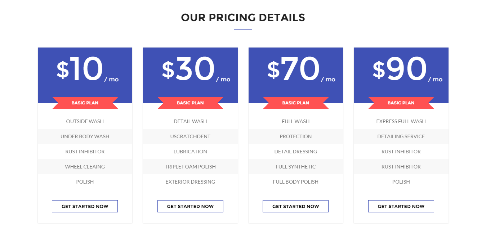

Created: 15 May, 2015
By: wpmines.com
Support: wpmines.com
Email: support@wpmines.com
Twitter: twitter.com/wpmines
Thank you for purchasing the template. If you have any questions that are beyond the scope of this help file, please feel free to post your questions on my support forum at http://wpmines.com. Thanks so much!

The Cardinal HTML5 website template is a custom design fully-functional auto workshop and service station website template and this template powerful solution for service provider organization. The Cardinal HTML5 template features a fully responsive framework that looks fantastic on any mobile device and retina display ready for high-quality resolution graphics. If you are looking professional HTML5 website template for your organization, the Cardinal ideal for you!
It contains 2 home pages, services, about, testimonials, gallery and total 20 valid HTML5 page templates. The Cardinal template features the coded with Bootstrap 3.1, HTML5 & CSS3. It’s compatible with all modern browsers and search engine friendly. So showcase your artworks and blogging posts with this awesome template!
We have some new features for this template. Which are unique.
The beautiful layout of book now form allows to book online

The template has beautiful services tabs in vertical layouts in cardinal.

The template comes with unique look of pricing tables

We used some great jQuery plugins for this template. All our plugins has been added from script.js and single page templates file from template folder. If you want to edit some single pages or just you want to edit script.js please open it a text editor like Dreamweaver, Notepad or Notepad++ and edit any lines what you want.
Please check custom plugins from /js/script.js file.
We have included 20 custom HTML templates like header styles, event styles, blog styles etc. Please open any HTML files with a text editor like Dreamweaver, Notepad or Notepad++ and edit any lines what you want.
We have included some custom CSS styles like colors.css (all color codes), style.css (default) etc. Please open any CSS files with a text editor like Dreamweaver, Notepad or Notepad++ and edit any lines what you want.
We used a ajax contact form for this template. Please open contact.php and edit line: 60 add your email address goes here.
Please open contact-us.html or contact-us-2.html or index.html file with a text editor and search initLatitude add your locations goes here.. You can find your location from this url : http://itouchmap.com/latlong.html You should add your locations goes here. That's it.
Please open color.css file from Cardinal-full/Cardinal/css/ folder with a text editor and build your own colors for you and included colors folder in the Cardinal-full
This template comes with premium ($12 Value) Revolution slider. Please open Cardinal-full/documentation/revolution-documentation/ and learn how to use Revolution Slider plugin with tons options.
You can find the version history (changelog.txt) file on cardinal-full.zip folder
Once again, thank you so much for purchasing this theme. As I said at the beginning, I'd be glad to help you if you have any questions relating to this theme. No guarantees, but I'll do my best to assist. If you have a more general question relating to the themes on ThemeForest, you might consider visiting the forums and asking your question in the "Item Discussion" section.
WPMines Team